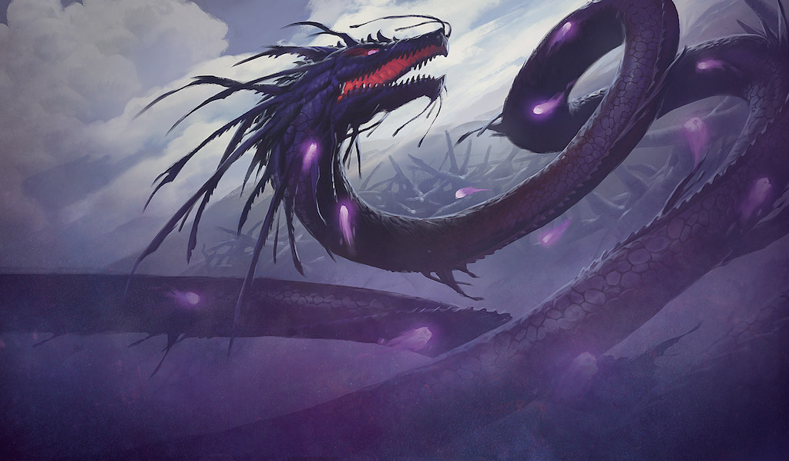
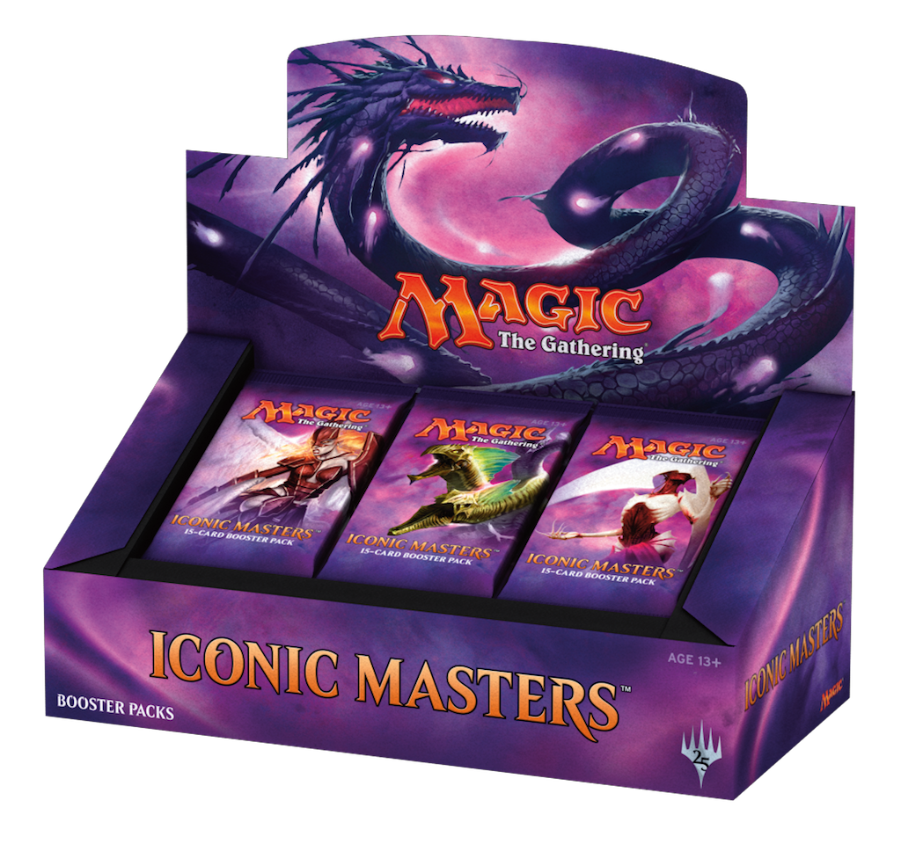
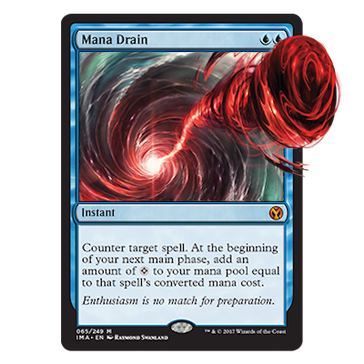

16 listopada 2017
Potężne czary i stwory z całej historii Magic: the Gathering powrócą już jutro, 17 listopada w najnowszym dodatku Iconic Masters.

To piąty (po trzech edycjach Modern Masters i jednym Eternal Masters) zestaw tzw. premium, zawierający najsilniejsze dotychczas wydane karty, nieznajdujące się na reserved list. Lista ta, o której warto napisać oddzielny artykuł, zawiera najmocniejsze i tym samym najdroższe karty, jakie kiedykolwiek wydano w 25-letniej historii Magica, i których przedruk mógłby zachwiać rynkiem wtórnym.
Zestaw ten, podobnie jak cztery poprzednie, odznaczać się będzie także ceną z półki premium. Paczka 15 losowych kart została wyceniona na $9.99 a Display Box, zawierający 24 takie boostery to wydatek ok $200. W polskich sklepach ceny kształtują się odpowiednio w granicach 35-40 oraz ok. 800 złotych. Czy warto? Cóż, M:tG nigdy nie było tanią grą, zaś kupowanie zapakowanych zestawów dodatkowych rzadko kiedy było opłacalne, jeśli chodzi o zwrot inwestycji. Każdy, choć trochę obyty gracz, poleci zakup pojedynczych kart, których brakuje nam do składanej talii.

Jednak z każdą premierą nowych edycji karcianki, wiążą się eventy organizowane w sklepach. Najczęściej są to tzw. drafty. Za opłacenie udziału w turnieju otrzymamy 3 nowiutkie boostery, z pozyskanych w ten sposób kart musimy złożyć talię. To zdecydowanie więcej zabawy niż zwykłe odpakowanie trzech paczek samemu w domu, a oprócz tego zawsze można coś wygrać. Większość sklepów organizujących takie turnieje, przewiduje również nagrody losowe dla wszystkich uczestników, a nie tylko dla tych najlepszych.
I na koniec samo mięsko, czyli na co możemy trafić otwierając boostery Iconic Masters. Dodatek zawiera 249 kart, wszystkie z nich już kiedyś pojawiały się w poprzednich zestawach. Na tę liczbę składa się 101 commonów, 80 uncommonów, 53 rary i 15 mythic rarów (purystów językowych bardzo przepraszam, ale w środowisku medżikowym nikt nie stosuje polskich odpowiedników). W każdej paczce 15 kart mamy gwarantowanego 1 rara lub mythic rara, 3 uncommony i 10 commonów, a także 1 kartę premium, czyli pokrytą specjalną świecącą folią. Karta ta będzie losowej rzadkości, a jej wartość kolekcjonerska zwykle jest około dwukrotnie wyższa niż karty zwykłej (choć zdarzają się wyjątki, gdy jest to znacznie więcej).

Dokładniejsze informacje można znaleźć na oficjalnej stronie Wizardsów. Z wartych wspomnienia kart, to nigdy wcześniej nie przedrukowany Mana Drain, który w internecie już osiąga cenę około $100. Oprócz tego trzy kolejne staple do niebieskich talii kontrolnych, czyli: Flusterstorm, Ancestral Vision oraz Cryptic Command; dwa lądy: biało-zielone Horizon Canopy i czerwono zielone Groove of the Burnwillows, oraz przydatny w każdej agresywnej talii z dużą ilością stworów artefakt Æther Vial.